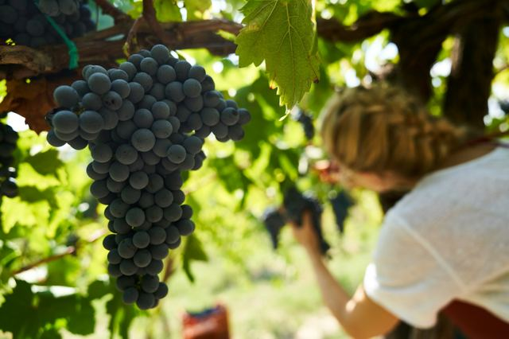

Websites for wineries, growers and farms.
Visitors, buyers and seasonal workers all look you up on a phone. Give each of them a clear next step.
- 1Industry
- 2Business
- 3Your website
Pick your business.
Choose your kind of business to see its website, every layout and all the ways to change it.
 Winery and cellar doorWines and cellar door. Cellar door tastings, Wine club, Online shop.21 layouts→
Winery and cellar doorWines and cellar door. Cellar door tastings, Wine club, Online shop.21 layouts→ Fruit grower and packerFruit growing and packing. Apples, Stone fruit, Packing and grading.21 layouts→
Fruit grower and packerFruit growing and packing. Apples, Stone fruit, Packing and grading.21 layouts→ Agricultural contractorAgricultural contracting. Cultivation and sowing, Spraying, Harvesting.21 layouts→
Agricultural contractorAgricultural contracting. Cultivation and sowing, Spraying, Harvesting.21 layouts→ Brewery and distilleryBrewing and distilling. Taproom, Tours and tastings, Online shop.21 layouts→
Brewery and distilleryBrewing and distilling. Taproom, Tours and tastings, Online shop.21 layouts→ Irrigation and pumpsIrrigation and pumps. Irrigation design, Pumps and bores, Installation.21 layouts→
Irrigation and pumpsIrrigation and pumps. Irrigation design, Pumps and bores, Installation.21 layouts→What your site must do.
Tap each one to see why it matters and how we build it.
Cellar door and bookingsOpening hours, tastings and functions, with a booking or enquiry button.
Why it matters
Opening hours, tastings and functions, with a booking or enquiry button.
How we build it
Opening hours in the top bar, and a booking or enquiry button on every page.
Sell onlineA wine club or online shop linked from every page.
Why it matters
A wine club or online shop linked from every page.
How we build it
A clear Shop or Wine club button in the menu, linked to the shop system you already use.
Wholesale enquiriesA simple path for buyers, packers and markets.
Why it matters
A simple path for buyers, packers and markets.
How we build it
A separate enquiry form for trade buyers, so it never mixes with visitor questions.
Seasonal workA harvest jobs page that fills itself with applications.
Why it matters
A harvest jobs page that fills itself with applications.
How we build it
A Harvest jobs page with dates, pay and an apply form that works on a phone.
Ready to see your three designs?
The brief takes about ten minutes.